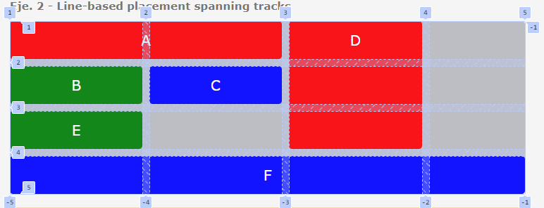
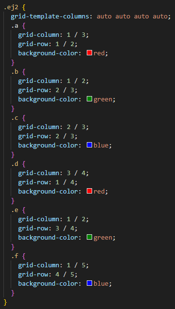

Podemos lograr el mismo resultado que en el ejemplo [02_Line-Based-Placement] utilizando una sintaxis abreviada que declare los valores de inicio y fin al mismo tiempo. Los valores se separan con una barra diagonal ("/") y nuevamente sería válido omitir la barra diagonal y el valor de fin, ya que abarcamos solo una pista.
grid-column: inicio / final;
grid-row: inicio / final;
Las propiedades abreviadas `grid-row` y `grid-column` permiten definir rápidamente la ubicación de elementos en una cuadrícula CSS, especificando el inicio y el final de las filas y columnas que ocupan. Simplifican el diseño y la adaptabilidad de la cuadrícula.
Line-based placement spanning tracks. Para crear áreas de cuadrícula que sean más grandes que una sola pista de cuadrícula, especificamos una línea final que está a más de una pista de distancia.
 